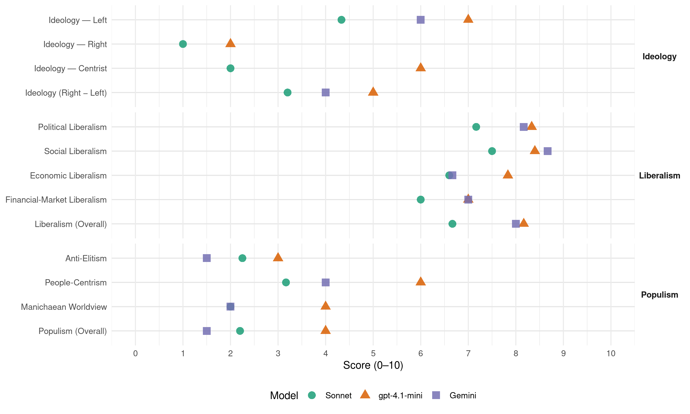

PSOE (Spain, 1996)
manifesto_id 33320_199603
Get full text: This site shows derived annotations and short verbatim quotes only. The full manifesto text is © Manifesto Project / WZB — obtain it via manifesto-project.wzb.eu using the manifesto_id above.
Headline scores
| Dimension | Sonnet | gpt-4.1-mini | Gemini |
|---|---|---|---|
| Populism (Overall) | 2.2 | 4.0 | 1.5 |
| Anti-Elitism | 2.2 | 3.0 | 1.5 |
| People-Centrism | 3.2 | 6.0 | 4.0 |
| Manichaean Worldview | 2.0 | 4.0 | 2.0 |
| Ideology (Right − Left) | 3.2 | 5.0 | 4.0 |
| Liberalism (Overall) | 6.7 | 8.2 | 8.0 |
| Political Liberalism | 7.2 | 8.3 | 8.2 |
| Social Liberalism | 7.5 | 8.4 | 8.7 |
| Economic Liberalism | 6.6 | 7.8 | 6.7 |
| Financial-Market Liberalism | 6.0 | 7.0 | 7.0 |
Evidence per dimension
Economic Liberalism
Gemini · score 7.0 · verified · chunk 1
“introducir competencia en estos sectores”
régimen del suelo, de cara a introducir competencia en estos sectores y favorecer, por tanto, la mejora en la calidad del servicio.
Gemini · score 4.0 · verified · chunk 2
“no susceptible, por tanto, de un tratamiento estrictamente mercantil”
como un acto sanitario integrado en el conjunto del sistema sanitario, no susceptible, por tanto, de un tratamiento estrictamente mercantil. Ello debe hacerse compatible con una menor especificidad
Gemini · score 7.0 · verified · chunk 3
“introducción de más competencia en el funcionamiento”
la certeza de que la introducción de más competencia en el funcionamiento de los mercados de bienes
Gemini · score 7.0 · verified · chunk 4
“libre y leal competencia y de la ordenación”
En este contexto y sobre la base de la libre y leal competencia y de la ordenación del territorio y el urbanismo comercial, proponemos
Gemini · score 8.0 · verified · chunk 5
“definitiva liberalización en 1999, basada en”
cara a su definitiva liberalización en 1999, basada en las siguientes acciones concretas
Gemini · score 7.0 · verified · chunk 6
“Abrir mercados a las empresas”
materia audiovisual. - Abrir mercados a las empresas en ambas direcciones e impulsar la
gpt-4.1-mini · score 7.0 · verified · chunk 1
“una política que ha propiciado la competitividad de nuestro tejido productivo manteniendo el poder adquisitivo de los salarios”
…se ha garantizado a la vez el crecimiento económico y la redistribución de la renta. Ello se debe en buena parte a una política que ha propiciado la competitividad de nuestro tejido productivo manteniendo el poder adquisitivo de los salarios…
gpt-4.1-mini · score 8.0 · verified · chunk 2
“apoyar la creación de redes de empresarias”
- Fomentar la capacidad empresarial de las mujeres y facilitar la creación de redes de empresarias. EDUCACIÓN Es importante que todos los procesos educativos incorporen la perspectiva de género que siente las bases para una nueva generación con actitudes nuevas.
gpt-4.1-mini · score 8.0 · verified · chunk 3
“la liberalización recogidas en el Programa de Convergencia”
La reducción de subvenciones y la adopción de medidas liberalizadoras de esos mercados deben permitir poner fin a situaciones de privilegio y de falseamiento de la competencia no sólo injustificables en términos de equidad, sino también extremadamente costosas en términos de estabilidad de precios. Por ello, proponemos llevar adelante las políticas de liberalización recogidas en el Programa de Convergencia, y en otros capítulos de este programa electoral, referidas a Colegios Profesionales, farmacias, sector transporte y telecomunicaciones.
gpt-4.1-mini · score 9.0 · verified · chunk 4
“la política de privatizaciones debe tener como principal objetivo mejorar la competitividad empresarial de la economía”
…La política de privatizaciones debe tener como principal objetivo mejorar la competitividad empresarial de la economía y, por ello, deberá mantenerse bajo control del sector público exclusivamente aquellas empresas que tengan un carácter de clara importancia estratégica para la economía. También se deberá valorar la posibilidad de mantener aquellas otras empresas que, aún no teniendo viabilidad económica, sean de especial relevancia para el tejido social, aunque deberá buscarse el camino más adecuado para su redimensionamiento o incluso, si fuera imprescindible, para el cese de su actividad.
gpt-4.1-mini · score 8.0 · verified · chunk 5
“reducir el déficit de explotación de Correos y Telégrafos, mejorando los procedimientos de gestión”
Proseguir los esfuerzos de reducción del déficit de explotación de Correos y Telégrafos, mejorando los procedimientos de gestión. - Adecuar la legislación postal a la situación real del sector, asegurando que la competencia se desarrolle con respeto a los derechos de los usuarios y de acuerdo con las directrices de la Unión Europea.
gpt-4.1-mini · score 7.0 · verified · chunk 6
“abrir mercados a las empresas en ambas direcciones e impulsar la formación y cualificación de los trabajadores”
- Abrir mercados a las empresas en ambas direcciones e impulsar la formación y cualificación de los trabajadores. - Culminar el proyecto de gaseoducto euromagrebí. - Mantener y aumentar la cooperación con esos países en el terreno de la emigración y poner en marcha políticas solidarias respecto a la inmigración legal.
Sonnet · score 6.0 · verified · chunk 1
“liberalización de los sectores del transporte y de las telecomunicaciones”
se adoptarán medidas para avanzar en la liberalización de los sectores del transporte y de las telecomunicaciones. Todo ello con el fin de mejorar la competitividad de la economía española
Sonnet · score 5.0 · mixed · chunk 2
“Responsabilidad pública en la provisión de los servicios, aunque abierta a la iniciativa privada”
Responsabilidad pública en la provisión de los servicios, aunque abierta a la iniciativa privada, particularmente a aquella sin ánimo de lucro
Sonnet · score 7.0 · verified · chunk 3
“medidas liberalizadoras de esos mercados”
La reducción de subvenciones y la adopción de medidas liberalizadoras de esos mercados deben permitir poner fin a situaciones de privilegio
Sonnet · score 6.0 · verified · chunk 4
“progresiva privatización de aquellas que operen”
Las medidas en el ámbito de la empresa pública deberán pasar por la progresiva privatización de aquellas que operen en sectores que no se consideren prioritarios
Sonnet · score 7.0 · verified · chunk 5
“Introducir competencia en el sector”
2. Introducir competencia en el sector, en el marco establecido en la Unión Europea. 3. Impulsar al desarrollo industrial y tecnológico del sector español de telecomunicaciones.
Sonnet · score 7.0 · verified · chunk 6
“Abrir mercados a las empresas en ambas direcciones”
Abrir mercados a las empresas en ambas direcciones e impulsar la formación y cualificación de los trabajadores.
Financial-Market Liberalism
Gemini · score 7.0 · verified · chunk 1
“la Unión Monetaria, una meta irrenunciable”
CONTROL DE LA INFLACIÓN Y REFORMAS ESTRUCTURALES LA UNIÓN MONETARIA, UNA META IRRENUNCIABLE REFORMAS EN LOS IMPUESTOS
Gemini · score 6.0 · verified · chunk 2
“concesión de préstamos bancarios a estudiantes”
alcanzar una mayor excelencia nacional e internacional, para avanzar hacia la especialización en el ámbito universitario. - Crearemos nuevos títulos de ciclo corto, tanto para atender a los sectores económicos que demanden nuevas profesiones como para permitir el reconocimiento académico de estudios universitarios parciales. - Impulsaremos la concesión de préstamos bancarios a estudiantes, subvencionados y avalados por el Estado.
Gemini · score 7.0 · verified · chunk 3
“transparencia de los costes de los servicios financieros”
normas necesarias para aumentar la transparencia de los costes de los servicios financieros, y nos opondremos
Gemini · score 7.0 · verified · chunk 4
“transparencia de los costes de los servicios financieros”
propondremos las normas necesarias para aumentar la transparencia de los costes de los servicios financieros, y nos opondremos a cualquier iniciativa
Gemini · score 8.0 · verified · chunk 5
“criterios de equilibrio económico-financiero del sistema”
Gestionar los puertos con criterios de equilibrio económico-financiero del sistema portuario, sin apelar a subvenciones
Gemini · score 7.0 · verified · chunk 6
“inversiones de capital asiático”
nuestras inversiones allí, y las inversiones de capital asiático en España. Seguiremos incrementando la
gpt-4.1-mini · score 6.0 · verified · chunk 1
“cumplir las condiciones de convergencia que le permitan participar en la moneda única europea”
…en 1997, la economía española debe cumplir las condiciones de convergencia que le permitan participar, desde el primer momento, en la moneda única europea…
gpt-4.1-mini · score 8.0 · verified · chunk 4
“propondremos las normas necesarias para aumentar la transparencia de los costes de los servicios financieros, y nos opondremos a cualquier iniciativa que suponga la minoración de los actuales niveles de competencia entre las distintas entidades del sector bancario”
…Para ello promoveremos una ley de modificación de la Ley de Colegios Profesionales. Además, propondremos las normas necesarias para aumentar la transparencia de los costes de los servicios financieros, y nos opondremos a cualquier iniciativa que suponga la minoración de los actuales niveles de competencia entre las distintas entidades del sector bancario. Las anteriores medidas estructurales se complementarían con actuaciones en tres ámbitos específicos: el sistema de pensiones, el sector público empresarial y el mercado de suelo urbanizable.
Sonnet · score 5.0 · verified · chunk 1
“estabilidad monetaria, son instrumentos imprescindibles”
La lucha contra la inflación, la reducción del déficit público, la estabilidad monetaria, son intrumentos imprescindibles para contar con una economía sana y competitiva
Sonnet · score 5.0 · verified · chunk 2
“préstamos bancarios a estudiantes, subvencionados y avalados por el Estado”
Impulsaremos la concesión de préstamos bancarios a estudiantes, subvencionados y avalados por el Estado
Sonnet · score 7.0 · verified · chunk 3
“transparencia de los costes de los servicios financieros”
propondremos las normas necesarias para aumentar la transparencia de los costes de los servicios financieros, y nos opondremos a cualquier iniciativa que suponga la minoración de los actuales niveles de competencia entre las distintas entidades del sector bancario.
Sonnet · score 7.0 · verified · chunk 4
“transparencia de los costes de los servicios financieros”
propondremos las normas necesarias para aumentar la transparencia de los costes de los servicios financieros, y nos opondremos a cualquier iniciativa que suponga la minoración
Sonnet · score 6.0 · verified · chunk 5
“blanqueo de capitales”
brigada de policía especial para la investigación y persecución del blanqueo de capitales. Además planteamos: Una regulación más amplia y detallada de las intervenciones telefónicas
Political Liberalism
Gemini · score 8.0 · verified · chunk 1
“vigorizar nuestro sistema democrático”
queremos revalorizar el papel de las instituciones basadas en la soberanía popular y vigorizar nuestro sistema democrático.
Gemini · score 8.0 · verified · chunk 2
“garantizar la igualdad ante la Ley”
la marginación social. Continuaremos introduciendo las reformas necesarias para garantizar la igualdad ante la Ley y realizando políticas integrales para favorecer la igualdad
Gemini · score 8.0 · verified · chunk 3
“derechos reconocidos en nuestras normas legales”
garantizarles los derechos reconocidos en nuestras normas legales en igualdad de condiciones
Gemini · score 8.0 · verified · chunk 4
“una sociedad más informada, más solidaria y más democrática”
coadyuvando así a la configuración de una sociedad más informada, más solidaria y más democrática. En esta sociedad de la información
Gemini · score 9.0 · verified · chunk 5
“proteger los derechos y libertades de los”
tiene como objetivo fundamental proteger los derechos y libertades de los ciudadanos.
Gemini · score 8.0 · verified · chunk 6
“fortalecimiento de la democracia en Centroamérica”
Del mismo modo, el fortalecimiento de la democracia en Centroamérica ha de ser un objetivo prioritario
gpt-4.1-mini · score 8.0 · verified · chunk 1
“profundizar el vínculo social en una sociedad cohesionada que solo puede construirse con ciudadanos libres”
…nuestro objetivo esencial y el de nuestra política es revitalizar el vínculo social en una sociedad cohesionada que solo puede construirse con ciudadanos libres, y por consiguiente responsables…
gpt-4.1-mini · score 9.0 · verified · chunk 2
“la democracia del siglo XXI debe ser participativa”
La democracia del siglo XXI debe ser participativa. El Estado, la política y lo público encontraron sus límites hace ya algún tiempo para resolver en solitario los retos de nuestra sociedad.
gpt-4.1-mini · score 8.0 · verified · chunk 3
“la defensa y protección de los consumidores forma parte ya de la cultura de nuestro país”
En defensa del consumidor La defensa y protección de los consumidores forma parte ya de la cultura de nuestro país En los próximos años nos proponemos reforzar el protagonismo de los consumidores y la dimensión del consumo en las políticas de competencia, de mejora de la calidad de vida y del bienestar social.
gpt-4.1-mini · score 8.0 · verified · chunk 4
“promoveremos la educación ciudadana para el cumplimiento de las obligaciones tributarias y un mayor desarrollo de los valores propios de la ética de lo colectivo: la solidaridad y el sentido de la responsabilidad”
…para avanzar en la cultura fiscal, promoveremos la educación ciudadana para el cumplimiento de las obligaciones tributarias y un mayor desarrollo de los valores propios de la ética de lo colectivo: la solidaridad y el sentido de la responsabilidad ante las cargas generales. Debe avanzarse, así mismo, en mejorar las relaciones entre los contribuyentes y la Administración Tributaria y potenciar el cumplimiento voluntario de las obligaciones fiscales. Se continuará mejorando los derechos y las garantías de los ciudadanos y se recopilarán los mismos en una Carta de Derechos en la línea de las recomendaciones de la Unión Europea. La lucha contra el fraude tanto en prestaciones como en fraude fiscal -en la que hay que involucrar al conjunto de la sociedad española propiciándose el rechazo social de los defraudadores- ha de ser en los próximos años uno de los ejes para incrementar los ingresos fiscales y reducir el déficit público.
gpt-4.1-mini · score 9.0 · verified · chunk 5
“la lucha contra la corrupción”
En esta Legislatura: - Hemos aprobado un conjunto de medidas legales y administrativas que han de servir para prevenir, investigar, perseguir y castigar la corrupción. La creación de la Fiscalía Anticorrupción, dificultará las actividades de los corruptos.
gpt-4.1-mini · score 8.0 · verified · chunk 6
“la organización de la seguridad y la defensa constituye uno de los recursos a disposición del Estado”
La premisa que ha guiado la actuación de los sucesivos gobiernos socialistas en materia de paz y seguridad ha sido la búsqueda permanente de la coherencia de esta política con la política exterior que mejor defendía y defiende nuestros objetivos e intereses en el mundo. Por primera vez en la historia reciente de España, la organización de la seguridad y la defensa constituye uno de los recursos a disposición del Estado, para hacer sentir su peso específico en el concierto de las naciones. La promoción de los principios que España propugna en su política exterior se defiende no sólo desde las relaciones bilaterales, sino también desde las organizaciones internacionales en las que participa nuestro país.
Sonnet · score 7.0 · verified · chunk 1
“PROFUNDIZAR LA DEMOCRACIA ES SINÓNIMO DE MÁS DEMOCRACIA POLÍTICA”
PROFUNDIZAR LA DEMOCRACIA ES SINÓNIMO DE MÁS DEMOCRACIA POLÍTICA, y ésta exige un delicado equilibrio de controles y contrapesos que debe vigilarse y perfeccionarse constantemente.
Sonnet · score 7.0 · verified · chunk 2
“valores democráticos y ofrecerles cauces adecuados”
Orientar a los jóvenes en los valores democráticos y ofrecerles cauces adecuados para expresar sus opiniones y participar activamente en la sociedad
Sonnet · score 7.0 · verified · chunk 3
“trasvase de sus facultades de control a las Comisiones Parlamentarias”
La renovación y profesionalización de los Consejos de Administración de las televisiones públicas y el trasvase de sus facultades de control a las Comisiones Parlamentarias.
Sonnet · score 6.0 · verified · chunk 4
“debate político y social para determinar”
Se articulará un debate político y social para determinar los plazos y la naturaleza de las decisiones a adoptar. Resultado de tal debate será un instrumento legislativo
Sonnet · score 8.0 · verified · chunk 5
“fortalecer el sistema democrático”
pretendemos desarrollar a lo largo de la próxima legislatura, medidas tendentes a fortalecer el sistema democrático, mejorar el funcionamiento de las instituciones, desarrollar la protección de los derechos
Sonnet · score 8.0 · verified · chunk 6
“fortalecimiento de la democracia en Centroamérica”
el fortalecimiento de la democracia en Centroamérica ha de ser un objetivo prioritario en nuestra política hacia América Latina
Liberalism (Overall)
Gemini · score 8.0 · verified · chunk 1
“vigorizar nuestro sistema democrático”
queremos revalorizar el papel de las instituciones basadas en la soberanía popular y vigorizar nuestro sistema democrático.
Gemini · score 7.0 · verified · chunk 2
“garantizar la igualdad ante la Ley”
la marginación social. Continuaremos introduciendo las reformas necesarias para garantizar la igualdad ante la Ley y realizando políticas integrales para favorecer la igualdad
Gemini · score 8.0 · verified · chunk 3
“introducción de más competencia en el funcionamiento”
la certeza de que la introducción de más competencia en el funcionamiento de los mercados de bienes
Gemini · score 8.0 · verified · chunk 4
“libre y leal competencia y de la ordenación”
En este contexto y sobre la base de la libre y leal competencia y de la ordenación del territorio y el urbanismo comercial, proponemos
Gemini · score 9.0 · verified · chunk 5
“proteger los derechos y libertades de los”
tiene como objetivo fundamental proteger los derechos y libertades de los ciudadanos.
Gemini · score 8.0 · verified · chunk 6
“fortalecimiento de la democracia”
Del mismo modo, el fortalecimiento de la democracia en Centroamérica ha de ser un objetivo prioritario
gpt-4.1-mini · score 8.0 · verified · chunk 1
“profundizar el vínculo social en una sociedad cohesionada que solo puede construirse con ciudadanos libres”
…nuestro objetivo esencial y el de nuestra política es revitalizar el vínculo social en una sociedad cohesionada que solo puede construirse con ciudadanos libres, y por consiguiente responsables…
gpt-4.1-mini · score 9.0 · verified · chunk 2
“la democracia del siglo XXI debe ser participativa”
La democracia del siglo XXI debe ser participativa. El Estado, la política y lo público encontraron sus límites hace ya algún tiempo para resolver en solitario los retos de nuestra sociedad.
gpt-4.1-mini · score 8.0 · verified · chunk 3
“la defensa y protección de los consumidores forma parte ya de la cultura de nuestro país”
En defensa del consumidor La defensa y protección de los consumidores forma parte ya de la cultura de nuestro país En los próximos años nos proponemos reforzar el protagonismo de los consumidores y la dimensión del consumo en las políticas de competencia, de mejora de la calidad de vida y del bienestar social.
gpt-4.1-mini · score 8.0 · verified · chunk 4
“propondremos las normas necesarias para aumentar la transparencia de los costes de los servicios financieros, y nos opondremos a cualquier iniciativa que suponga la minoración de los actuales niveles de competencia entre las distintas entidades del sector bancario”
…Para ello promoveremos una ley de modificación de la Ley de Colegios Profesionales. Además, propondremos las normas necesarias para aumentar la transparencia de los costes de los servicios financieros, y nos opondemos a cualquier iniciativa que suponga la minoración de los actuales niveles de competencia entre las distintas entidades del sector bancario. Las anteriores medidas estructurales se complementarían con actuaciones en tres ámbitos específicos: el sistema de pensiones, el sector público empresarial y el mercado de suelo urbanizable.
gpt-4.1-mini · score 8.0 · verified · chunk 5
“la lucha contra la corrupción”
En esta Legislatura: - Hemos aprobado un conjunto de medidas legales y administrativas que han de servir para prevenir, investigar, perseguir y castigar la corrupción. La creación de la Fiscalía Anticorrupción, dificultará las actividades de los corruptos.
gpt-4.1-mini · score 8.0 · verified · chunk 6
“la organización de la seguridad y la defensa constituye uno de los recursos a disposición del Estado”
La premisa que ha guiado la actuación de los sucesivos gobiernos socialistas en materia de paz y seguridad ha sido la búsqueda permanente de la coherencia de esta política con la política exterior que mejor defendía y defiende nuestros objetivos e intereses en el mundo. Por primera vez en la historia reciente de España, la organización de la seguridad y la defensa constituye uno de los recursos a disposición del Estado, para hacer sentir su peso específico en el concierto de las naciones. La promoción de los principios que España propugna en su política exterior se defiende no sólo desde las relaciones bilaterales, sino también desde las organizaciones internacionales en las que participa nuestro país.
Sonnet · score 7.0 · verified · chunk 1
“ESCRUPULOSO RESPETO AL PRINCIPIO DE LEGALIDAD”
Las reglas del juego de nuestro sistema democrático necesitan ser revitalizadas bajo el ESCRUPULOSO RESPETO AL PRINCIPIO DE LEGALIDAD. Sin respeto a la ley no hay igualdad posible.
Sonnet · score 6.0 · verified · chunk 2
“igualdad entre hombres y mujeres no es una conquista individual”
la igualdad entre hombres y mujeres no es una conquista individual sino colectiva. Para la consecución de la real y efectiva igualdad
Sonnet · score 7.0 · verified · chunk 3
“medidas liberalizadoras de esos mercados”
La reducción de subvenciones y la adopción de medidas liberalizadoras de esos mercados deben permitir poner fin a situaciones de privilegio
Sonnet · score 6.0 · verified · chunk 4
“progresiva privatización de aquellas que operen”
Las medidas en el ámbito de la empresa pública deberán pasar por la progresiva privatización de aquellas que operen en sectores que no se consideren prioritarios
Sonnet · score 7.0 · verified · chunk 5
“fortalecer el sistema democrático”
pretendemos desarrollar a lo largo de la próxima legislatura, medidas tendentes a fortalecer el sistema democrático, mejorar el funcionamiento de las instituciones, desarrollar la protección de los derechos
Sonnet · score 7.0 · verified · chunk 6
“fortalecimiento de la democracia en Centroamérica”
el fortalecimiento de la democracia en Centroamérica ha de ser un objetivo prioritario en nuestra política hacia América Latina
Anti-Elitism
Gemini · score 3.0 · verified · chunk 1
“defendiendo así su status y sus privilegios”
Mientras los conservadores se aferraban al pasado tratando de mantener las cosas como estaban, defendiendo así su status y sus privilegios, la izquierda ha protagonizado
Gemini · score 0.0 · verified · chunk 5
“exaltaciones populistas o se produzcan reacciones”
es el apropiado para que puedan surgir exaltaciones populistas o se produzcan reacciones intolerantes y fanáticas.
gpt-4.1-mini · score 3.0 · verified · chunk 1
“la derecha en España nunca ha sido la solución, sino una fuente interminable de problemas”
…no podemos aceptar la tesis de la derecha de que ha llegado su hora. Por muchas razones: porque la derecha en España nunca ha sido la solución, sino una fuente interminable de problemas por la miopía de sus gobiernos, porque la derecha en el mundo ya ha mostrado que no tiene soluciones…
Sonnet · score 4.0 · verified · chunk 1
“defendiendo así su status y sus privilegios”
los conservadores se aferraban al pasado tratando de mantener las cosas como estaban, defendiendo así su status y sus privilegios, la izquierda ha protagonizado
Sonnet · score 2.0 · mixed · chunk 2
“ataques de todo tipo que, de forma velada o directa”
el sistema público de pensiones está sufriendo ataques de todo tipo que, de forma velada o directa, atentan contra su estabilidad
Sonnet · score 2.0 · verified · chunk 3
“situaciones de privilegio y de falseamiento de la competencia”
La reducción de subvenciones y la adopción de medidas liberalizadoras deben permitir poner fin a situaciones de privilegio y de falseamiento de la competencia no sólo injustificables en términos de equidad
Sonnet · score 1.0 · verified · chunk 4
“sector público empresarial en aumento servía de coartada”
Superada la época en la que el sector público empresarial en aumento servía de coartada para transferirle las actividades privadas incapaces de sobrevivir
Sonnet · score 2.0 · verified · chunk 5
“exaltaciones populistas o se produzcan reacciones intolerantes”
Es el apropiado para que puedan surgir exaltaciones populistas o se produzcan reacciones intolerantes y fanáticas. Defender, en primer lugar, a la democracia de ese tipo de peligros
Ideology — Centrist
gpt-4.1-mini · score 6.0 · verified · chunk 1
“un proyecto político que sirva para construir el futuro de todos los ciudadanos y ciudadanas de España”
…el PSOE quiere ofrecer un proyecto político que sirva para construir el futuro de todos los ciudadanos y ciudadanas de España. Un proyecto de todos y para todos…
Sonnet · score 2.0 · verified · chunk 1
“nuevo contrato social”
Proponemos a todos los españoles un “nuevo contrato social”, para que nuestro país avance en su modernización, con el empleo como objetivo primordial
Sonnet · score 2.0 · verified · chunk 2
“compromiso con el sistema público y obligatorio de pensiones”
El PSOE asume su compromiso con el sistema público y obligatorio de pensiones, desde el rigor y la responsabilidad
Sonnet · score 2.0 · verified · chunk 3
“consenso básico que existe entre todos los grupos políticos”
es necesario seguir manteniendo el consenso básico que existe entre todos los grupos políticos en relación con el problema de las drogas
Sonnet · score 2.0 · verified · chunk 4
“bienestar de los españoles”
Nosotros estamos persuadidos que la Unión Económica y Monetaria es un objetivo posible y altamente beneficioso para el bienestar de los españoles
Sonnet · score 2.0 · verified · chunk 5
“tarea común para todos los demócratas”
Defender, en primer lugar, a la democracia de ese tipo de peligros es tarea común para todos los demócratas. Conseguir que la acción política se desarrolle con rigor
Ideology — Left
Gemini · score 6.0 · verified · chunk 1
“la izquierda ha protagonizado los anhelos de progreso”
defendiendo así su status y sus privilegios, la izquierda ha protagonizado los anhelos de progreso y la voluntad de cambio.
gpt-4.1-mini · score 7.0 · verified · chunk 1
“una política que ha propiciado la competitividad de nuestro tejido productivo manteniendo el poder adquisitivo de los salarios y expandiendo en lo posible el gasto social”
…se ha garantizado a la vez el crecimiento económico y la redistribución de la renta. Ello se debe en buena parte a una política que ha propiciado la competitividad de nuestro tejido productivo manteniendo el poder adquisitivo de los salarios y expandiendo en lo posible el gasto social…
Sonnet · score 7.0 · verified · chunk 1
“redistribución y cohesión social”
Se ha compatibilizado un proceso de crecimiento económico rápido y sostenido con una política de redistribución y cohesión social. SE HAN REDUCIDO LAS DESIGUALDADES
Sonnet · score 5.0 · verified · chunk 2
“sistema público de pensiones, público, obligatorio y basado en el reparto”
el PSOE se compromete a mantener y consolidar el actual sistema de pensiones, público, obligatorio y basado en el reparto y la solidaridad
Sonnet · score 5.0 · verified · chunk 3
“disminución de las desigualdades sociales”
la riqueza está mejor repartida gracias a la disminución de las desigualdades sociales a lo largo de la década de los años ochenta
Sonnet · score 3.0 · verified · chunk 4
“mantener nuestro sistema público de protección social”
El objetivo es mantener nuestro sistema público de protección social introduciendo algunas modificaciones en su estructura a fin de garantizar las prestaciones
Sonnet · score 4.0 · verified · chunk 5
“queremos que compitan las empresas”
Los socialistas queremos que compitan las empresas y queremos optimizar la gestión de los servicios públicos, pero queremos hacerlo estableciendo mecanismos que eviten la exclusión.
Sonnet · score 2.0 · verified · chunk 6
“solidaridad humanitaria y pacificadora”
La solidaridad humanitaria y pacificadora constituye uno de los elementos esenciales de la política de paz y seguridad
Ideology (Right − Left)
Gemini · score 4.0 · verified · chunk 1
“la izquierda ha protagonizado los anhelos de progreso”
defendiendo así su status y sus privilegios, la izquierda ha protagonizado los anhelos de progreso y la voluntad de cambio.
gpt-4.1-mini · score 5.0 · verified · chunk 1
“la derecha en España nunca ha sido la solución, sino una fuente interminable de problemas”
…no podemos aceptar la tesis de la derecha de que ha llegado su hora. Por muchas razones: porque la derecha en España nunca ha sido la solución, sino una fuente interminable de problemas…
Sonnet · score 6.0 · verified · chunk 1
“valores del socialismo democrático”
UN PROYECTO DE TODOS Y PARA TODOS, que responde a los valores y a los ideales del socialismo democrático.
Sonnet · score 3.0 · verified · chunk 2
“sistema público de pensiones, público, obligatorio y basado en el reparto”
el PSOE se compromete a mantener y consolidar el actual sistema de pensiones, público, obligatorio y basado en el reparto y la solidaridad
Sonnet · score 3.0 · verified · chunk 3
“disminución de las desigualdades sociales”
la riqueza está mejor repartida gracias a la disminución de las desigualdades sociales a lo largo de la década de los años ochenta
Sonnet · score 2.0 · verified · chunk 4
“mantener nuestro sistema público de protección social”
El objetivo es mantener nuestro sistema público de protección social introduciendo algunas modificaciones en su estructura a fin de garantizar las prestaciones
Sonnet · score 2.0 · verified · chunk 5
“queremos que compitan las empresas”
Los socialistas queremos que compitan las empresas y queremos optimizar la gestión de los servicios públicos, pero queremos hacerlo estableciendo mecanismos que eviten la exclusión.
Ideology — Right
gpt-4.1-mini · score 2.0 · verified · chunk 1
“la sociedad del futuro no es la sociedad desigual, egoísta”
…la sociedad del futuro no es la sociedad desigual, egoísta, desprovista de motivaciones colectivas, en la que está pensando la derecha…
Sonnet · score 1.0 · verified · chunk 1
“Los inmigrantes, parte de nuestra sociedad”
LOS INMIGRANTES, PARTE DE NUESTRA SOCIEDAD (section heading in index); the manifesto frames immigrants as members of society, not as a threat
Sonnet · score 1.0 · verified · chunk 3
“señas de identidad española”
han decidido permanecer en el lugar de residencia habitual sin renunciar a sus señas de identidad española
Sonnet · score 1.0 · verified · chunk 5
“nuestra identidad cultural”
queremos hacerlo garantizando la prestación de servicios públicos de calidad y salvaguardando nuestra identidad cultural. Queremos que la sociedad de la información española sea competitiva
Manichaean Worldview
Gemini · score 2.0 · verified · chunk 1
“guiada sólo por el afán de poder”
para dejarlo en manos de una derecha sin liderazgo ni proyecto, sin un programa público coherente y guiada sólo por el afán de poder.
gpt-4.1-mini · score 4.0 · verified · chunk 1
“la sociedad del futuro no es la sociedad desigual, egoísta”
…la sociedad del futuro no es la sociedad desigual, egoísta, desprovista de motivaciones colectivas, en la que está pensando la derecha. Nuestro proyecto se basa en la defensa y asunción crítica de lo que hemos hecho durante trece años…
Sonnet · score 4.0 · verified · chunk 1
“la derecha en España nunca ha sido la solución”
NO PODEMOS ACEPTAR LA TESIS DE LA DERECHA DE QUE HA LLEGADO SU HORA. Por muchas razones: porque la derecha en España nunca ha sido la solución, sino una fuente interminable de problemas
Sonnet · score 2.0 · mixed · chunk 2
“actitud obstruccionista de los partidos que representan a la derecha”
Esta Ley no ha podido ser aprobada por la actitud obstruccionista de los partidos que representan a la derecha en nuestro país
Sonnet · score 1.0 · verified · chunk 3
“Frente a quienes pronosticaban que no saldríamos”
La opción que seguimos fué acertada. Frente a quienes pronosticaban que no saldríamos de la crisis, ya la hemos superado.
Sonnet · score 1.0 · verified · chunk 4
“Quienes se oponen a que España forme parte”
Quienes se oponen a que España forme parte desde el principio de la Europa de la primera velocidad, argumentan que eso supondría menos crecimiento
Sonnet · score 2.0 · verified · chunk 5
“combate contra la corrupción”
estamos comprometidos a seguir hasta el final en ese combate contra la corrupción. Junto a la continuación de la lucha contra la corrupción
People-Centrism
Gemini · score 4.0 · verified · chunk 1
“un proyecto político que sirva para construir el futuro de todos los ciudadanos”
EL PSOE QUIERE OFRECER UN PROYECTO POLÍTICO QUE SIRVA PARA CONSTRUIR EL FUTURO DE TODOS LOS CIUDADANOS Y CIUDADANAS DE ESPAÑA. UN PROYECTO DE TODOS Y PARA TODOS
gpt-4.1-mini · score 6.0 · verified · chunk 1
“un proyecto político que sirva para construir el futuro de todos los ciudadanos y ciudadanas de España”
…el PSOE quiere ofrecer un proyecto político que sirva para construir el futuro de todos los ciudadanos y ciudadanas de España. Un proyecto de todos y para todos, que responde a los valores y a los ideales del socialismo democrático…
Sonnet · score 5.0 · verified · chunk 1
“UN PROYECTO DE TODOS Y PARA TODOS”
EL PSOE QUIERE OFRECER UN PROYECTO POLÍTICO QUE SIRVA PARA CONSTRUIR EL FUTURO DE TODOS LOS CIUDADANOS Y CIUDADANAS DE ESPAÑA. UN PROYECTO DE TODOS Y PARA TODOS, que responde a los valores
Sonnet · score 4.0 · verified · chunk 2
“derechos sociales de los trabajadores y del conjunto de la sociedad”
este sistema es el que mejor defiende los derechos sociales de los trabajadores y del conjunto de la sociedad en general
Sonnet · score 3.0 · verified · chunk 3
“un país de todos y para todos”
La cultura es un factor decisivo para constituir un país abierto, tolerante, plural y dinámico. Un país de todos y para todos.
Sonnet · score 2.0 · verified · chunk 4
“bienestar de los españoles”
Nosotros estamos persuadidos que la Unión Económica y Monetaria es un objetivo posible y altamente beneficioso para el bienestar de los españoles
Sonnet · score 3.0 · verified · chunk 5
“DEMOCRACIA PARA EL PUEBLO Y DESDE EL PUEBLO”
IX. DEMOCRACIA PARA EL PUEBLO Y DESDE EL PUEBLO POLÍTICA PARA LA DEMOCRACIA En 1993 los socialistas propusimos a los ciudadanos afrontar
Sonnet · score 2.0 · verified · chunk 6
“pueblo saharaui decidir libremente mediante referéndum”
reiteramos nuestro apoyo al Plan de Paz que permite al pueblo saharaui decidir libremente mediante referéndum, bajo total supervisión de la ONU
Populism (Overall)
Gemini · score 3.0 · verified · chunk 1
“defendiendo así su status y sus privilegios”
Mientras los conservadores se aferraban al pasado tratando de mantener las cosas como estaban, defendiendo así su status y sus privilegios, la izquierda ha protagonizado
Gemini · score 0.0 · verified · chunk 5
“exaltaciones populistas o se produzcan reacciones”
es el apropiado para que puedan surgir exaltaciones populistas o se produzcan reacciones intolerantes y fanáticas.
gpt-4.1-mini · score 4.0 · verified · chunk 1
“la derecha en España nunca ha sido la solución, sino una fuente interminable de problemas”
…no podemos aceptar la tesis de la derecha de que ha llegado su hora. Por muchas razones: porque la derecha en España nunca ha sido la solución, sino una fuente interminable de problemas por la miopía de sus gobiernos…
Sonnet · score 4.0 · verified · chunk 1
“SABEMOS LO QUE ESPERA LA GENTE DEL PARTIDO SOCIALISTA”
SABEMOS LO QUE ESPERA LA GENTE DEL PARTIDO SOCIALISTA. QUÉ REFORMAS NOS PIDE PARA AVANZAR HACIA EL FUTURO.
Sonnet · score 2.0 · verified · chunk 2
“ataques de todo tipo que, de forma velada o directa”
el sistema público de pensiones está sufriendo ataques de todo tipo que, de forma velada o directa, atentan contra su estabilidad
Sonnet · score 2.0 · verified · chunk 3
“un país de todos y para todos”
La cultura es un factor decisivo para constituir un país abierto, tolerante, plural y dinámico. Un país de todos y para todos.
Sonnet · score 1.0 · verified · chunk 4
“bienestar de los españoles”
Nosotros estamos persuadidos que la Unión Económica y Monetaria es un objetivo posible y altamente beneficioso para el bienestar de los españoles
Sonnet · score 2.0 · verified · chunk 5
“exaltaciones populistas o se produzcan reacciones intolerantes”
Es el apropiado para que puedan surgir exaltaciones populistas o se produzcan reacciones intolerantes y fanáticas. Defender, en primer lugar, a la democracia de ese tipo de peligros
Social Liberalism